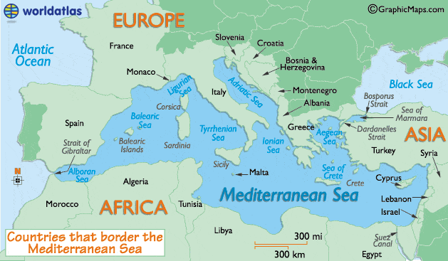
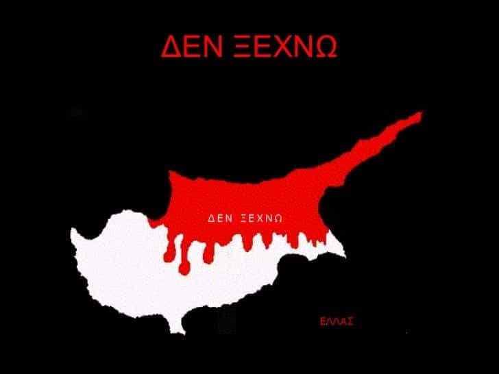

Recently, yours truly and his girlfriend went to Cyprus for five days, largely to escape -10 degrees Celsius (14 F) in Sweden, in favor of approximately 18+ degrees (64 F) on the southeastern Mediterranean island. Here are five observations from my stay there.
1. The country is similar to Malta (and almost as good)

Obviously, Greece is the country’s closest cultural equivalent, since they share ethnic and linguistic ties and geographical proximity, but another nice Mediterranean nation, Malta, also comes to mind.
While the longitude is quite different, since Malta is located close to North Africa while Cyprus is only about 265 kilometers from Lebanon and Syria in Western Asia, the latitude is the same (35).
With fairly similar population sizes, cultural characteristics and millions of tourists coming every year, the two countries are like national cousins. If I had to choose, Malta is perhaps slightly better overall, but Cyprus is definitely not far after.
I would recommend a tour trip within the borders of the Akamas national park, and the capital Nicosia. Young party animals may go to Ayia Napa instead, where the slut factor is high. For those with less profane plans, Paphos, located on the southwestern coast is an excellent point of departure for relaxation and excursions.
2. The Cypriots hate the Turkish occupiers (and are not afraid of saying so)

In Western European countries it may happen that people complain about immigrants, especially low- and semi-skilled workers that you happen to run into.
Yet, there is a striking difference between how the Cypriots talk about the Turkish military and their enablers, who since 1974 illegally occupy about 38% of the northern land mass. They hate them and are not afraid of stressing that point publicly.
Perhaps it’s got to do with that Cyprus is a small country while Turkey is a large and relatively powerful state, and the slave/master complex makes them more assertive, but that’s probably a secondary reason. I think that many outsiders understand their legitimate anger.
One may note, though, that there are the mainland Turks and their government, rather than the Turkish Cypriots, who make up the target for such resentful feelings.
3. The local women are average
I recall once when I went on a date with a very pretty Cypriotic woman in her late 20s. She had long, curly brown hair, a petite figure, and beautiful facial features. Plus, she seemed quite traditional and thus made up decent marriage material.
Unfortunately, from the small sample that I laid my eyes on in the western parts of the country, few women are as pretty as she was. Many look okay but kind of average, with decent bodies but dull faces. A reason for this may be that many Cypriots live abroad, in for example the UK or Australia.
Hence, if you go to Cyprus and manage to get laid it’s likely going to be with a tourist from another European country. Especially if you take into account that the local women generally are more conservative and therefore less likely to have sex outside of marriage or long-term relationships. But there are always exceptions and variations, of course.
4. People generally seem laid-back
For at least eight months of the year, Cyprus is a warm country. Even in February the weather resembles Scandinavian summers. Tourism, finance, shipping and real estate are the most important services that the economy hinges on, and most people you meet work with tourism in some form.
Combined with the fact that the living costs are fairly low, at least in comparison to Western European countries, Cypriots have a laidback mentality. They often work many hours but are no strangers to taking long breaks and relax in the sun. Male (tour) drivers genuinely seem to love their work.
5. Wealthy Russians are investing a lot
The influential Harvard political scientist Samuel Huntington was onto something when he stressed in his seminal work The Clash Of Civilizations And The Remaking Of World Order (1996) that it exists a broader Orthodox civilization in the world, in which the Christian Orthodox branch is the primary cultural marker. Russia, Armenia, Ukraine, Serbia, Greece and Cypus are some of these countries.
For the last 5-10 years or so, multiple rich Russian and Ukrainian businessmen have invested a lot in Cyprus. While there I learned that a large share of the new-built houses are owned by Russians. To own a nice house in an Orthodox nation with a more pleasant climate seems reasonable from that perspective. However, to obtain a EU citizenship appears to be another underlying reason, which perhaps makes Cyprus involved in some shady business.
In summary
Overall, Cyprus is a very nice country to visit. Even in February, the weather is quite pleasant, and there are much to see and do. Furthermore, the laid-back mentality is appealing. If you happen to be able to go there, I would recommend a visit, whether you’re a younger or older guy.
Read More: 4 Reasons You Should Visit The Island Of Malta